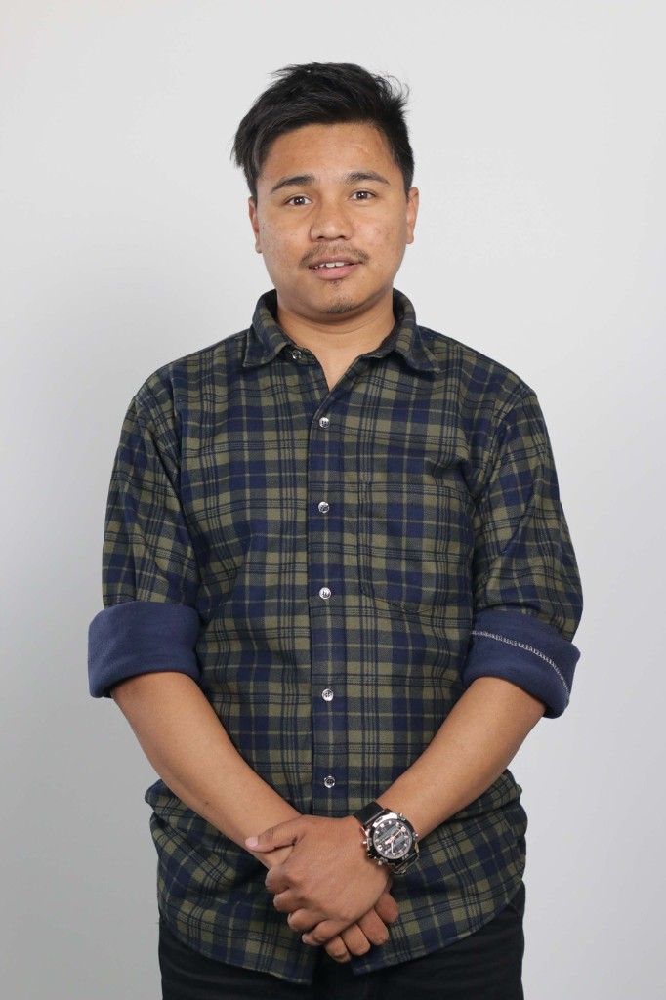

Available for opportunities
Hi, I'm Bikesh Twanju
Senior Software QA Automation Engineer
I build robust test automation frameworks that catch defects early and deliver reliable software. With 8+ years crafting quality through Katalon, Selenium, mentoring, and dependable releases.

About
Quality engineering with operational clarity
I help product and engineering teams ship with confidence through dependable automation, practical release governance, and mentoring that lifts the whole QA practice.
Across healthcare and enterprise platforms, I have trained teams on Katalon Studio, strengthened code-review culture, and kept hotfix pipelines predictable under pressure.
Experience
Career timeline
Senior Software QA Automation Engineer
- Lead automation for EZ-CAP with continuous improvement and reliable requirements coverage.
- Support hotfix and regression automation with analysis that protects release stability.
- Troubleshoot automation challenges and resolve technical blockers for the team.
Senior Software QA Automation Engineer
- Trained CGT automation teams on Katalon Studio structure and object organization.
- Established coding standards, Bitbucket reviews, and Git workflows across projects.
- Reviewed automation code for maintainability and designed strategies that improved delivery speed.
Associate QA Engineer
- Validated applications across devices and platforms.
- API testing with Postman/Swagger, Selenium with Java, and JMeter performance checks.
- Collaborated with developers and PMs to clarify features and testing scope.
Expertise
Skills & toolkit
Education
Academic foundation
Bachelor of Engineering — Computer
Khwopa Engineering College
December 2013 – December 2017
Contact
Let's work together
Open to conversations about automation strategy, mentoring, and dependable release pipelines.